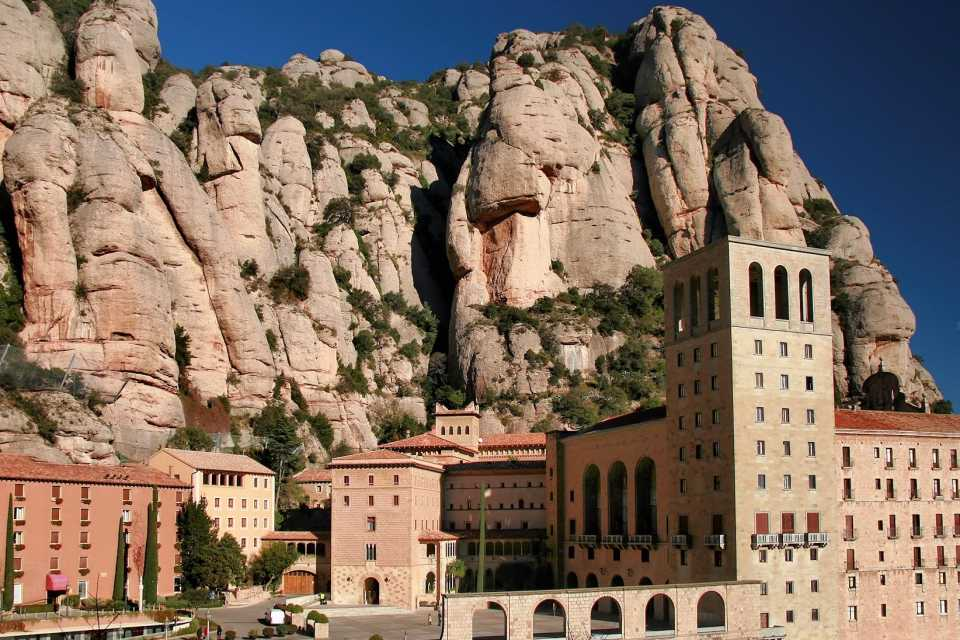
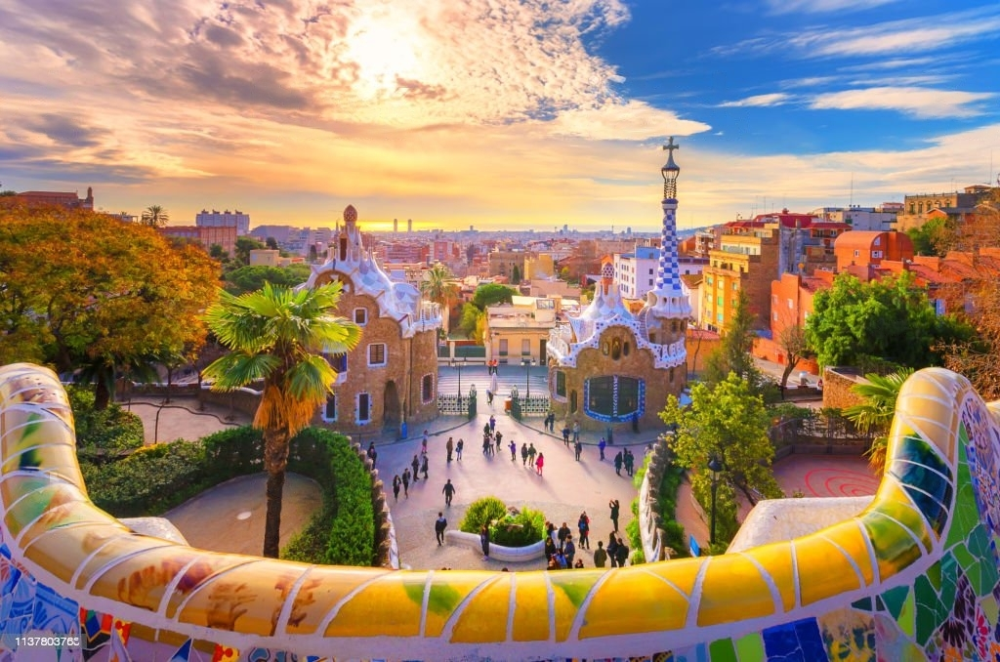
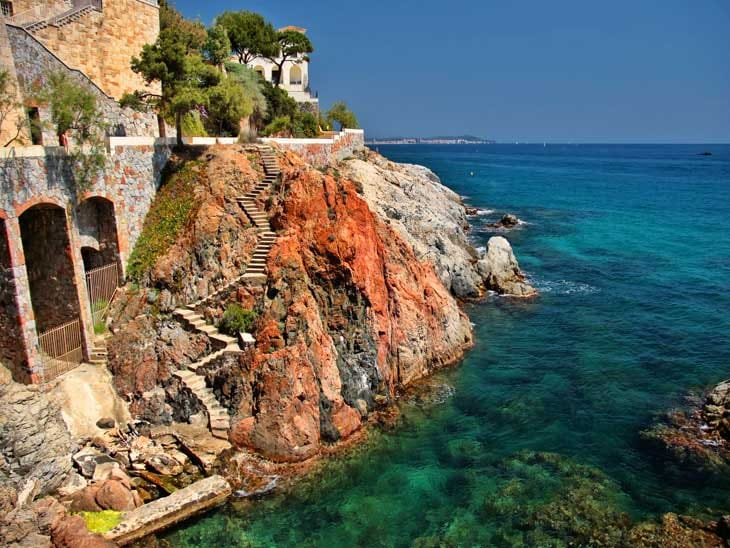
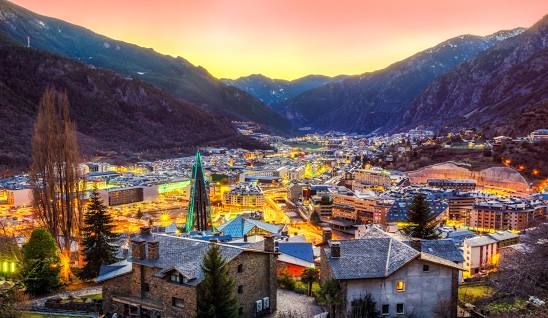
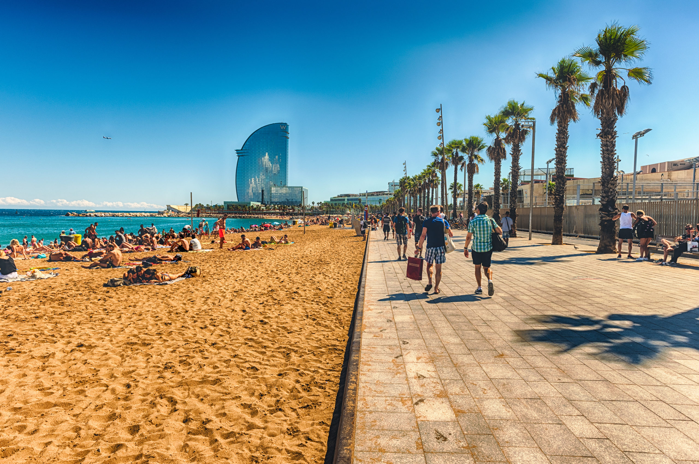

¿Qué saber antes de ir a Catalunya de vacaciones?
Echa un vistazo al visado, principales atracciones, divisa y cultura.
El Visado
Cuando se trata de viajar a España, los ciudadanos del CCG no están exentos de visa y deben solicitar un visado Schengen de corta duración para estancias turísticas de hasta 90 días en un período de 180 días. Este visado les permite moverse libremente por la zona Schengen. Para obtenerlo, es necesario presentar documentación que incluya un pasaporte válido, prueba de alojamiento, itinerario de viaje, seguro médico de viaje, entre otros. Aunque el proceso es bastante estándar, siempre es aconsejable consultar el consulado o embajada española en su país de origen para obtener información detallada y actualizada.
- Baréin
- Kuwait
01
¿Qué hacer en Catalunya?
Cataluña, ubicada en el noreste de España, es un tesoro de diversidad y cultura. Cada rincón de esta región ofrece una experiencia única, capaz de cautivar tanto al viajero aventurero como al amante del arte, la historia y la buena mesa. ¡Prepara tus maletas y déjate seducir por Cataluña! Es una región que combina montañas majestuosas, playas doradas, rica historia y una vibrante vida urbana. Aquí te proponemos un recorrido por sus imprescindibles:
- Barcelona: Esta ciudad cosmopolita es famosa por la arquitectura modernista de Antoni Gaudí. No puedes perderte la Sagrada Familia, el Parque Güell y el Paseo de Gracia. Sumérgete en el ambiente bohemio del Barrio Gótico y disfruta del arte en el Museo Picasso.
- Costa Brava: Un litoral repleto de playas idílicas, calas escondidas y pueblos con encanto. Visita Cadaqués, lugar de inspiración para Salvador Dalí, y descubre las ruinas de Empúries, testimonio de la época romana y griega.
- Pirineos: Si eres amante de la naturaleza, los Pirineos te ofrecen senderismo, esquí y pequeños pueblos donde el tiempo parece haberse detenido. Val d'Aran y Aigüestortes son joyas naturales que no puedes dejar de conocer.
- Bodegas del Penedès: La región es famosa por su cava. Haz una ruta por sus bodegas, donde podrás degustar este espumoso y aprender sobre su proceso de elaboración.
- Monasterio de Montserrat: Situado en una montaña única con formaciones rocosas sorprendentes, es un lugar de peregrinación y ofrece unas vistas panorámicas inigualables.
- Tarragona: Ciudad con un pasado romano palpable en su anfiteatro, foro y murallas. No olvides visitar la cercana Costa Daurada, con playas perfectas para familias y parques temáticos como PortAventura.
- Gastronomía: La cocina catalana es un festín para los sentidos. Prueba platos tradicionales como la "escudella", "crema catalana" o "calçots" con su salsa romesco.
- Fiestas y Tradiciones: Si viajas en septiembre, no te pierdas la festividad de La Mercè en Barcelona. Durante el año, diversas localidades celebran sus "correfocs", "castells" y otros eventos tradicionales.

El Monasterio y montaña de Montserrat
Esta mezquita se compone de un jardín que se extiende alrededor de ella y varios aparcaderos enmedio de este. En el perímetro exterior de la mezquita se encuentra la primera entrada que da al patio interior con una fuente, la sala donde se puede arrendar el tour en diferentes idiomas y la zona de souvenirs. Pasado el patio llegamos a la entrada hay un ropero donde dejar los zapatos antes de pasar dentro de la mezquita. En la mezquita encontramos un grupo de españoles que habían parado con el crucero y estaban en un tour por la mezquita.
Las Montañas de Cataluña: Refugios de Naturaleza y Tradición
Catalunya no solo brilla por su costa; sus montañas son un auténtico tesoro para el alma aventurera. Desde los majestuosos Pirineos, ideales para el esquí y el senderismo, hasta el místico Montserrat con su monasterio enclavado entre rocas singulares. En el Parque Nacional de Aigüestortes, lagos de origen glaciar reflejan picos nevados en un paisaje de ensueño. Pueblos de montaña, como Vielha o La Seu d'Urgell, conservan tradiciones ancestrales y ofrecen gastronomía local que deleitará al viajero. Ya sea escuchando leyendas de montañas encantadas, practicando deportes de aventura o simplemente respirando el aire puro des de las cimas, las montañas catalanas prometen una experiencia rica en emociones y descubrimientos.


Barcelona
Barcelona, la joya catalana bañada por el Mediterráneo, es una ciudad que vibra con historia, arte y cultura. Desde las ondulantes estructuras de Gaudí, como la icónica Sagrada Familia, hasta el bullicioso paseo de Las Ramblas, cada rincón destila carácter. El Barrio Gótico invita a perderse por calles estrechas llenas de historias, mientras que el moderno barrio de El Raval muestra una cara contemporánea y artística de la ciudad. Si añoras el mar, la Barceloneta te espera con sus playas doradas y su ambiente marinero. Y para quienes buscan vistas panorámicas, Montjuïc y el Parque Güell son paradas obligatorias. Barcelona combina lo moderno con lo antiguo, la montaña con el mar, y la tradición con la innovación. Una ciudad que, sin duda, enamora a quien la visita.
La Costa Brava
La Costa Brava, situada en el noreste de Cataluña, es un espectacular tramo de litoral donde escarpados acantilados se encuentran con playas de aguas cristalinas. Su nombre, que significa "Costa Salvaje", refleja el carácter indómito de su paisaje. Pueblos medievales como Pals o Peratallada te transportan en el tiempo, mientras que Cadaqués y Port de la Selva te sumergen en un ambiente bohemio, inspiración de artistas como Salvador Dalí. El Museo Dalí en Figueres es una visita obligada para los amantes del arte surrealista. Ya sea navegando en las calas escondidas de S'agaró, buceando en las Islas Medas o degustando la exquisita gastronomía marinera en Palamós, la Costa Brava promete una experiencia inolvidable. Un rincón donde la cultura catalana y la belleza mediterránea se funden en perfecta armonía.


Andorra: Un Paraíso Escondido entre Montañas
Andorra es un pequeño principado enclavado entre España y Francia. Un destino que combina maravillosamente naturaleza, deporte y compras. Durante el invierno, sus nevadas montañas se convierten en el refugio perfecto para los amantes del esquí y el snowboard. Estaciones como Grandvalira o Vallnord son famosas por ofrecer pistas para todos los niveles. Pero Andorra no es solo nieve; en verano, sus verdes paisajes invitan a hacer senderismo, ciclismo y disfrutar de la montaña. Además, su capital, Andorra la Vella, es un paraíso para los aficionados a las compras, gracias a sus bajos impuestos. Y no podemos olvidar sus relajantes balnearios, siendo Caldea el más destacado. En resumen, Andorra es un rincón único en Europa, ideal para quienes buscan aventura, relax y una experiencia inolvidable.
La Costa Daurada
Ubicada en la región de Cataluña, la Costa Daurada es un paraíso de sol y arena. Famosa por sus playas de aguas tranquilas y arena fina, este destino es perfecto para aquellos que buscan relajarse al sol o disfrutar de actividades acuáticas. Las playas ofrecen actividades como volei playa y zonas de calistenia.
Ya sea que busques aventura, historia o simplemente un lugar para desconectar, la Costa Daurada te espera con una oferta variada y encantadora. ¡Anímate a descubrir este tesoro catalán en tu próxima escapada!

02
¿Qué tener en cuenta al viajar a Catalunya?
1. Carteristas
2. Visa.